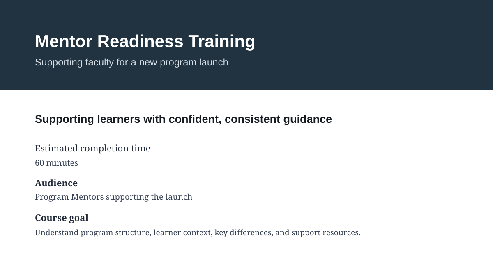
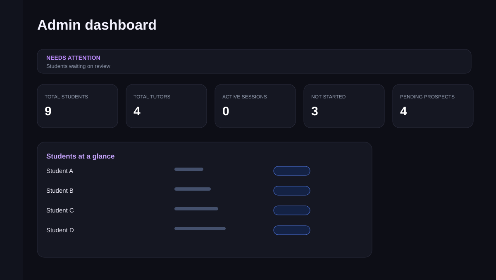

Kacey Day (Anderson) · Educational Program + Product Design
I design the systems around learning.
I work where learner experience, faculty needs, programs, and technology overlap. Usually, that means taking something complicated or unclear and figuring out how to make it simpler, more useful, and easier to scale.
Learners. Faculty. Programs. Products. And all the complicated stuff connecting them.
A different way in
Explore the work through a lens.
Choose an area of interest to jump directly to the work behind it.
Relevant evidence · Program Design
Relevant evidence · Product Design
Relevant evidence · Systems Thinking
Relevant evidence · Learner Experience
Relevant evidence · Collaboration
Relevant evidence · Research & Evidence
Featured work
Three projects, three different problems.
-
01 · PROGRAM & LEARNING DESIGN
Program & Learning Design
Educational Program Design + Faculty Enablement
Program readiness, faculty training, digital learning experiences, and reusable systems designed to make complex launches easier.

A reusable lesson structure keeps faculty readiness consistent while program details change. -
02 · LUMAVI
Lumavi
Digital Product + Learner Experience Design
Private beta
Designing one educational platform around the needs of administrators, tutors, students, and parents.

The admin view prioritizes learner activity and operational decisions within a multi-role product. -
03 · FLIGHT
FLIGHT
Enterprise Educational Systems Design
Designing a coordinated support experience for students experiencing low momentum.

The final Planner organizes tasks by learner phase, making the next step and relevant support easier to identify.
The through-line
Designing at a larger level each time.
My path into design hasn't been perfectly linear, but the pattern has been consistent. Each stage of my career has moved me from designing an individual experience toward designing more of the system around it.
Instruction
Designing how individual learning happens.
Individualized Programming
Fitting pathways to individual learners.
Learner Experience
Designing around what learners actually need.
Educational Systems
Designing the supports that connect people and tools.
Digital Products
Turning complex workflows into tools that feel simple to use.
Program Design
Building the structures that help programs launch, work, and evolve.
How I work
Six habits I bring to every project.
Human-centered
Start with the people experiencing the problem.
Systems-oriented
Consider how learners, faculty, curriculum, technology, and operations affect each other.
Collaborative
Bring the right people into the problem early and design with them, not around them.
Research-informed
Use evidence, standards, feedback, and research instead of designing from assumptions.
Iterative
Make something, learn from it, and improve the next version.
Scalable
Standardize what should be repeatable without removing the flexibility people need.
The common thread is designing better systems around people who are trying to learn.
Across programs, products, and learning experiences, I focus on turning complexity into something people can actually use.